이스탄불 여행 (3) - 통행세와 건물주
게시: 2025-11-27T06:30:28+09:00
고대 로마 공화정을 누가 망가뜨렸는지에 대해서는 율리우스 케사르라는 썰부터 아우구스투스, 술라, 심지어 그라쿠스 형제들이라는 썰까지 다양한 이야기가 있습니다. 실은 어떤 개인이 공화정을 망쳤다는 것은 말이 되지 않는 이야기이고, 내부적인 문제부터 외부적 요인까지 다양한 원인이 쌓여서 그런 결과가 나오는 것이지요. 그런 외부적 요인 중 하나는 킴브리(Cimbri) 족 등과 같은 외적의 침입이었고, 내부적인 문제는 그에 맞서 싸울 군대의 부족이었습니다.
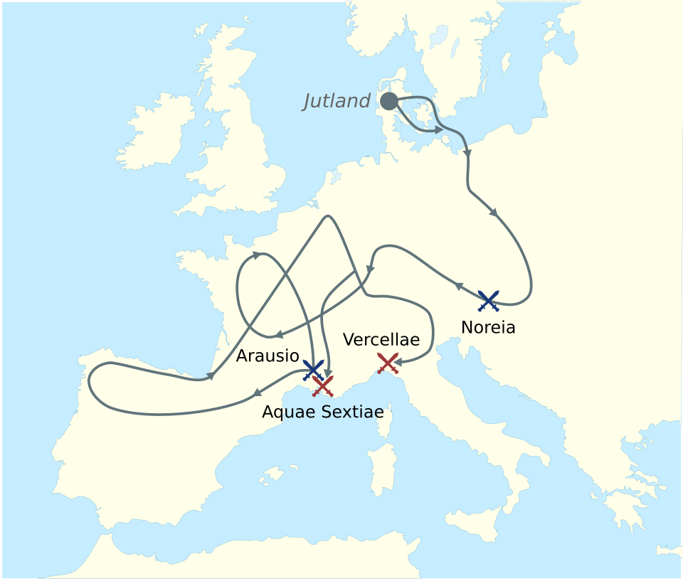
(킴브리족 및 튜톤족의 침입 경로와 결국 로마에 패배한 장소입니다. 저기 현재의 마르세이유 근처에서 패배한 모습을 눈여겨 보십시요. 이번 포스팅에서 다룰 해협 통행세 이야기와 상관이 있습니다.)
원래 로마 공화정의 군대는 그리스 도시국가들과 마찬가지로, 자신이 쓸 무기와 갑옷, 방패 등을 자신의 비용으로 마련하는 시민병으로 구성되었습니다. 그러니까 나라에 전쟁이 벌어지면 집에 보관하고 있던 갑옷과 방패를 들고 군에 가는 것이고, 전쟁이 끝나면 귀가하여 농사를 짓는 것이지요. 그런 제도하에서는 군대의 규모를 유지하기 위해서는 어느 정도 재산을 가진 자영농들의 수가 많아야 했습니다. 그러나 전쟁을 거듭하면 할 수록 그런 자영농들은 과중한 비용 부담에 시달리고 또 죽거나 다치면서 몰락하게 되었습니다. 반면, 그렇게 몰락한 자영농들의 토지와 정복 전쟁으로 획득한 토지를 사들인 대지주들이 나타나기 시작했습니다. 원래 어떤 체제하에서든 사람들의 돈 버는 재주에는 차이가 있기 마련이므로, 그렇게 빈부격차가 확대되는 것은 어쩔 수 없는 일입니다. 문제는 그렇게 소규모 자영농들이 몰락하여 대지주의 소작농이 되면서, 군대의 기반이 흔들리게 되었다는 것이었습니다. 자산이 없는 소작농은 자신의 무기와 방패를 마련할 수도 없었고, 누가 무기를 빌려준다고 해도, 그 날 벌어 그 날 먹는 처지인 소작농은 당장 군에 가면 자신은 물론 남은 가족들이 굶게 되니까요. 그런 문제를 해결하기 위해 BC 133년 경에 그라쿠스(Gracchus) 형제들이 대지주의 토지 소유를 제한하는 토지 개혁을 시도했습니다. 대지주로부터 일정 한도를 초과한 토지를 국가가 몰수하여 빈농 시민에게 분배하자는 것이 그라쿠스 형제의 개혁 주요 내용이었습니다. 그러나 인간의 탐욕에는 밑창이 없는 법이니, 그런 개혁안이 성공할 리가 없었습니다. 처음 개혁을 시도했던 형 티베리우스 그라쿠스는 전통과 법률에 위배되는 인물로 몰려 암살당했고, 몇 년 뒤 형의 뒤를 이어 개혁안을 재추진했던 동생 가이우스 그라쿠스도 결국 대지주들에 의해 '자살을 당했'습니다.
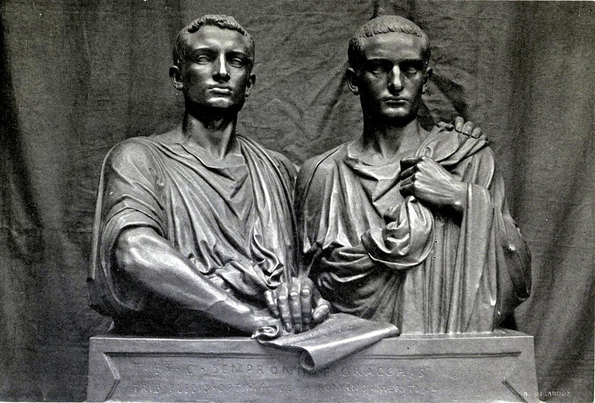
(그라쿠스 형제의 이 조각상은 당대에 만들어진 것이 아니라 19세기에 프랑스 조각가인 외젠 기욤이 만든 것입니다. 현재 오르세이 미술관에 소장되어 있습니다. 당대에는 발칙한 빨갱이로 몰려 죽음을 당했으니 조각 같은 것이 만들어졌을 리가 없지요. 그러나 당시 자기 땅을 지키려고 개혁에 반대하고 그라쿠스 형제들을 죽인 대지주들은 아무도 기억하지 않습니다만, 그라쿠스 형제의 이름은 인류 역사에 드높이 남아 있습니다.)
하지만 당장 군대에 갈 소규모 자영농이 없다는 문제는 그라쿠스 형제를 죽인다고 해서 해결될 수 없었습니다. 그 문제를 해결한 것이 바로 가이우스 마리우스(Gaius Marius)였습니다. 그는 자신의 무기를 마련하지 못하는 빈민들도 군대에 오도록 했고, 부족한 무기는 국가 무기고에서 지급했으며, 충분한 급여를 주는 대신 복무 이후에 점령지의 토지를 나누어 주기로 했습니다. 이런 식으로 로마 공화정이 변모하면서 자영농으로 이루어진 민병대 형태의 로마군은 빈민들로 이루어진 직업군인 형태로 서서히 바뀌었습니다. 가장 나쁜 것은, 병사들의 충성 대상이 공화정이 아니라, 전역 후에 자신에게 토지를 주겠다고 약속한 장군 개인이 되었다는 점이었습니다. 그 결과로 나타난 것이 술라와 폼페이우스, 율리우스 케사르 같은 군벌이었습니다. 그래서 어떤 이들은 마리우스를 로마 공화정의 파괴자라고 하는 것입니다.
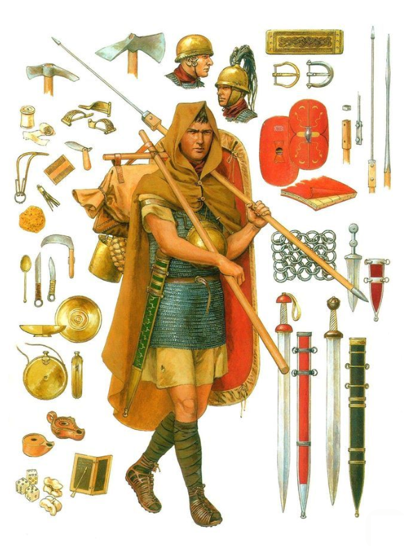
(마리우스의 군제 개편으로 만들어진 병사들을 당시에 '마리우스의 노새'라고 불렀습니다. 이는 그 출신의 비천함 때문만은 아니고, 당시 그리스 전통에 따라 중산층 출신 병사들은 행군할 때 무거운 짐이나 무기 등은 병사들이 직접 짊어지고 다니지 않고 각자 노예에게 짊어지게 하거나 노새에 실었는데, 이젠 빈민들을 병사들로 대거 채용하다보니 개인 노예도 노새도 없어서 병사들이 직접 짊어져야 했기 때문입니다.)
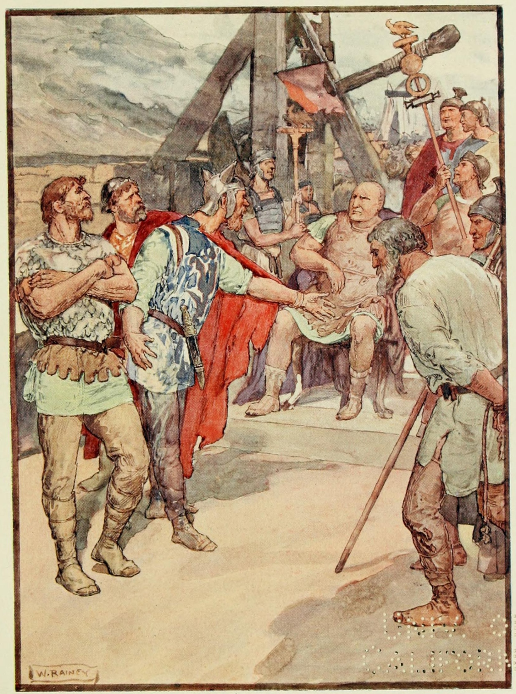
(킴브리족의 사절들과 만나는 마리우스의 모습입니다.)
간단히 마리우스에 대해 소개한다는 것이 그만 너무 길어졌네요. 아무튼 마리우스는 갈리아 지방을 침공한 킴브리족과 오늘날의 마르세이유인 마살리아(Massilia) 근처에서 싸우게 되었습니다. 마르세이유 바로 서쪽에서는 론(Rhône) 강이 지중해로 흘러들어 갑니다. 마리우스는 이 론강을 이용하여 자신의 부대에 대한 보급을 수행하려 했으나, 당시 론강 하구는 진흙과 모래 등이 잔뜩 쌓인 전형적인 삼각주(delta) 지대라서, 곡물을 실은 배가 항행하기 곤란했습니다. 마리우스는 이 문제를 론강 하구 삼각주 일부에 병사들을 동원하여 운하를 파서 해결했습니다. 사람들은 그 운하를 Fossa Mariana (마리우스의 참호)라고 불렀습니다. 그렇게 킴브리족과의 전쟁을 승리로 이끈 뒤, 마리우스는 그 지역을 떠나면서 자신이 팠던 운하를 자신에게 잘 협조해준 마살리아 시민들에게 선물로 주고 갔습니다. 그리고 마살리아 시민들은 그 운하를 통과하는 화물선에게 통행료를 받아 꽤 큰 돈을 벌었다고 합니다.
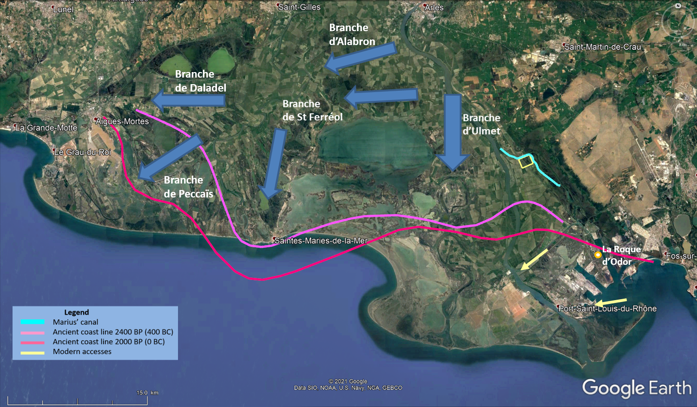
(저 빨간 선과 분홍색 선은 고대의 해안선을 표시한 것이고, 마리우스가 판 운하는 지도 오른쪽 중간 부분에 하늘색의 구부러진 선으로 표시되어 있습니다. 뭐 별로 길지는 않네요.)
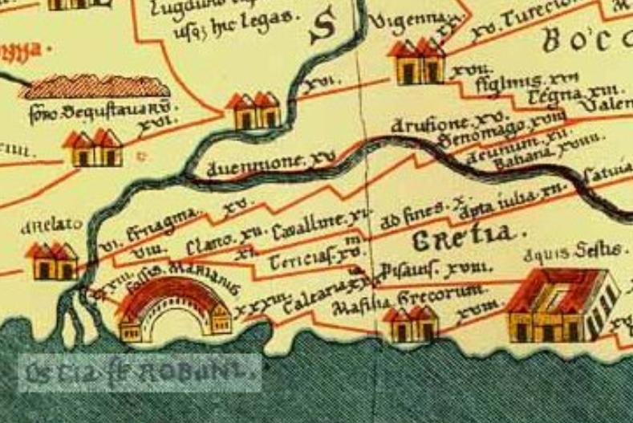
(마리우스의 운하는 지금은 다 메워져 없습니다만, 15세기에 그려진 이 론강 하구 그림에는 남아 있습니다.)
이렇게 고대부터 운하나 해협 등에서는 통행료를 받는 것이 흔한 일이었습니다. 요즘 제 글의 주제인 보스포러스 해협의 비잔티움(이스탄불)의 경우는 어땠을까요? 당연히 걷었습니다. 특히 당시의 상선은 규모도 작고 느렸기 떄문에, 비잔티움에서는 당대의 군함인 3단노선(trireme) 두어 척만 있으면 보스포러스 해협을 지나가는 상선을 손쉽게 따라잡아 격침시킬 수 있었으므로 통행세 강제가 매우 쉬웠습니다. 실은 그렇게 3단노선을 동원하여 상선들로부터 통행세를 강제로 징수하는 것은 산적들이 걷는 통행세와 별로 다르지 않습니다. 사람과 물자가 많이 지나다니는 중요한 고갯길에서 산적들이 통행세를 걷는다면 당연히 관가에서는 병졸들을 동원하여 토벌에 나서겠지요. 고대 그리스 시절부터 보스포러스 해협을 통과하는 곡물과 와인, 올리브유 등의 상품 거래가 매우 활발했습니다. 그리고 비잔티움은 고대 그리스 시절 한 번도 패권을 쥘 정도의 국력을 갖추지 못했습니다. 그런데 왜 아테네나 스파르타 같은 강력한 그리스 도시국가들은 연합하여 비잔티움을 공격하고 '항행의 자유'를 확보하지 않았을까요?
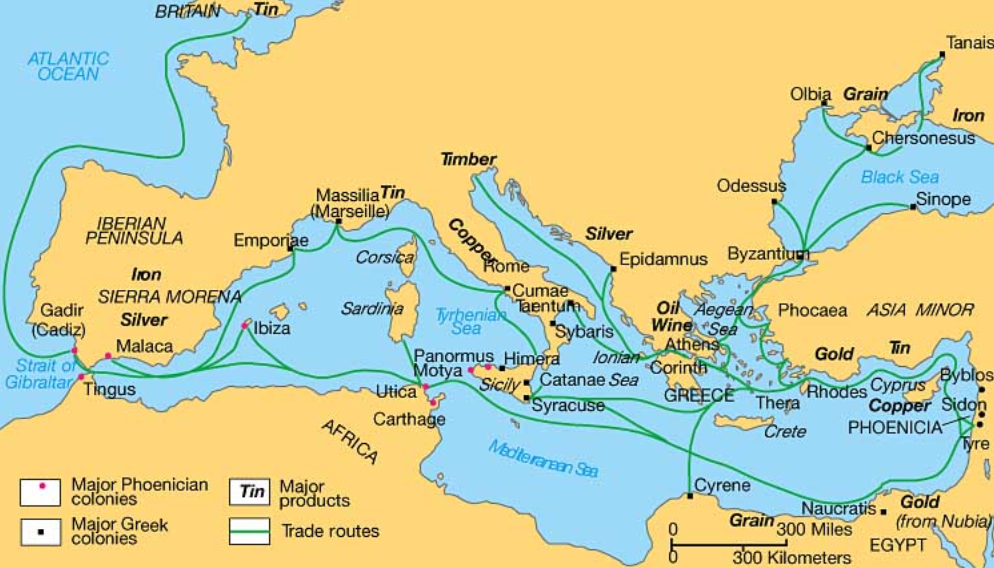
(고대 그리스의 지중해와 흑해를 넘나드는 교역로입니다. 그리스는 척박한 산지가 많아서 포도와 올리브 농사는 잘 되어도 곡물 농사는 부족했습니다. 그래서 비옥한 흑해 연안 지역과의 교역이 매우 중요했습니다. 요즘도 가끔씩 흑해에서 발견되는 침몰한 고대 그리스 상선의 잔해에서는 와인과 올리브유를 담은 도기와 함께, 흑해 연안의 그리스 식민도시에서 수입하는 파피루스로 만들어진 책(...이라기보다는 두루말이 문서)가 종종 발견된다고 합니다. 아마 본토의 문학과 철학에 목 말랐을 식민도시 사람들에게 수출할 서적이었겠지요. 아마 '어떻게 2천년 넘게 지난 파피루스 문서가 바닷속에서 썩지 않고 발견이 될 수 있지?'라고 생각하실 텐데, 그 비밀은 다다음번에 다루겠습니다.)
로마 시대의 그리스 역사가인 폴리비우스(Polybius)에 따르면 고대 그리스의 도시국가들은 비잔티움의 역할에 대해 매우 긍정적으로 받아들이고 큰 반감 없이 통행세를 냈다고 합니다. 비잔티움은 그리스 본토와는 다소 떨어진 트라키아(Thrace) 끄트머리에 위치한 도시로서, 그리스인들이 안심하고 살기에는 부적합한 곳이라고 할 수 있었습니다. 만약 비잔티움이 트라키아든 메디아든 외부 세력에 의해 함락되고 그들이 흑해와의 교역로를 끊어 버리거나 터무니 없이 비싼 통행료를 요구한다면, 와인와 올리브유를 수출하고 대신 흑해로부터 곡물을 수입하던 그리스 본토 전체가 큰 곤경에 처할 상황이었습니다. 따라서 비잔티움이 그 해협을 장악하고 지켜주는 대가로 적당한 통행세를 내는 것에는 반감이 없었다는 것입니다. 보스포러스 해협처럼 전략적 요충지를 쥐고 있다는 것은 월세가 따박따박 나오는 알짜배기 건물을 가지고 있는 것과 마찬가지입니다. 문제는 건물주의 힘이 약하면, 그 건물을 노리는 산적들이 많다는 것입니다. 실제로, 페르시아가 그리스를 침공할 때 페르시아는 가장 먼저 비잔티움의 항복을 받아냈고, 또 스파르타도 아테네를 굴복시키기 위해 비잔티움을 '접수'했습니다. 로마도 트라키아와 소아시아로 진출할 때 비잔티움을 포위 공격하여 항복을 받아냈습니다.
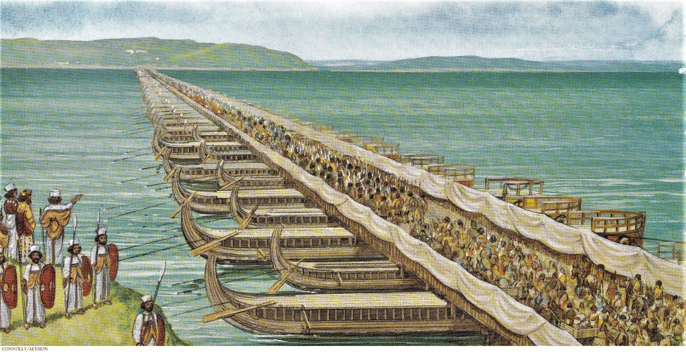 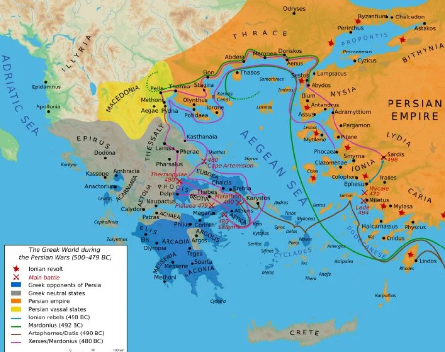
(성경에도 '아하수에로'라는 이름으로 등장하는 페르시아의 크세륵세스 대왕이 그리스를 침공하기 위해 유럽으로 건너올 때는 보스포러스 해협이 아니라 헬레스폰트(다다넬즈) 해협에 긴 부교를 놓고 건넜습니다. 나중에 폭풍으로 이 다리가 끊어지자 크세륵세스는 퇴로를 걱정하여 먼저 아시아로 돌아가버렸지요.)
그러면 결국 비잔티움은 아주 강력한 국가의 소유물이 되는 것이 자연스럽지 않을까요? 그래서 실제로 그렇게 되었습니다. 바로 동로마제국의 수도가 된 것입니다. AD 330년, 콘스탄티누스 대제가 비잔티움을 동로마 제국의 수도로 삼은 뒤 무려 1123년간 (도중에 십자군들에게 점령당하는 봉변도 겪었지만) 비잔티움은 콘스탄티노플이라는 이름으로 불리며 보스포러스 해협을 장악하고 번영을 누렸습니다.
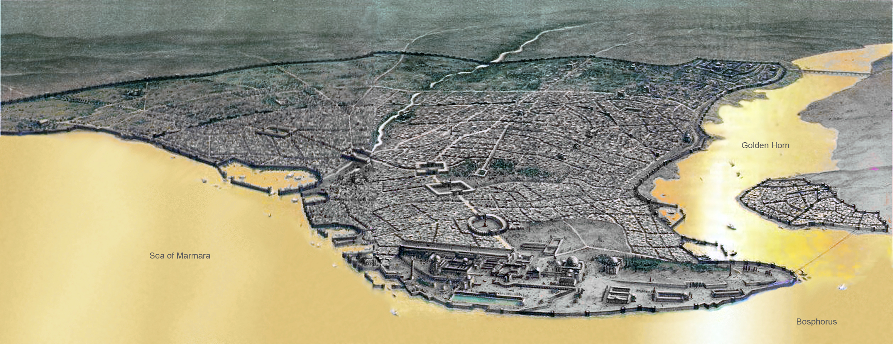
(동로마제국 시절의 콘스탄티노플의 상상 조감도입니다. 이미 14세기에 동로마제국은 더 이상 제국이 아니었고, 콘스탄티노플 근처만을 점유한 조그마한 도시국가 정도에 불과했지만 그래도 천년 넘게 유지가 될 수 있었던 것은 바로 저 지형 덕분입니다. 보스포러스 해협 뿐만 아니라, 이스탄불 북쪽의 금각만(Golden Horn) 덕분에 콘스탄티노플은 3면이 바다로 둘러싸인 천혜의 요새가 될 수 있었던 것입니다.)
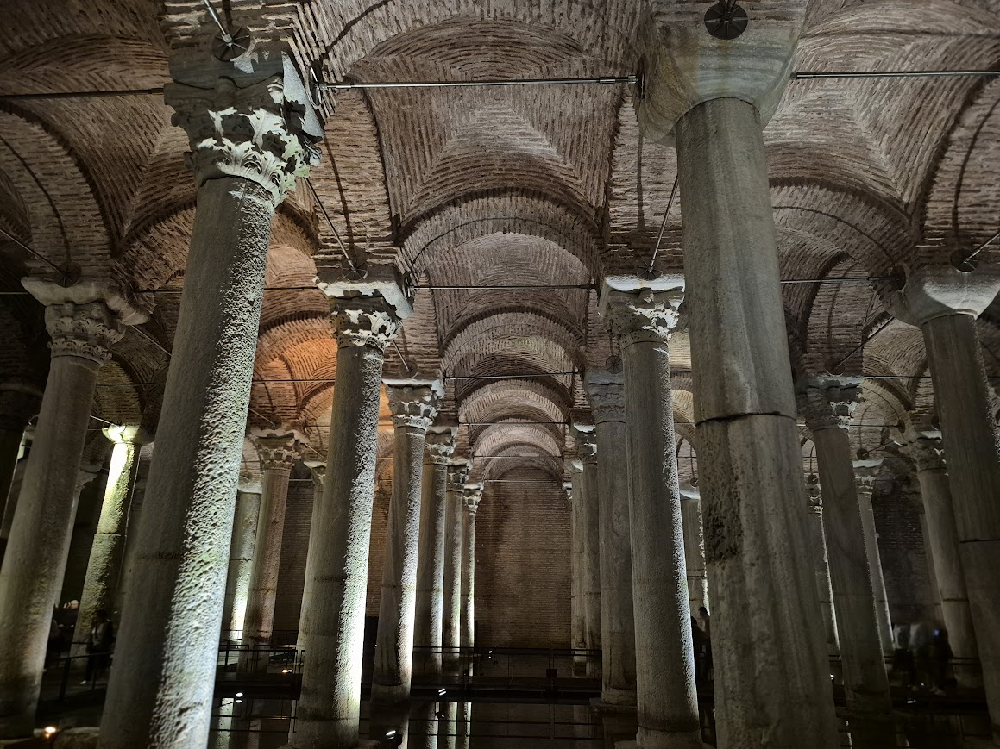
(그러나 모든 조건을 다 갖춘 도시는 없다고, 콘스탄티노플에는 큰 강이 없어서 물이 부족했습니다. 그래서 아야 소피아 바로 옆에 거대한 지하 저수조인 예레바탄 사라이(Yerebatan Sarnıcı, 영어로는 그냥 Basilica Cistern)를 만들어놓고 물을 보관하기도 했습니다. 이 사진은 제가 이번 여행에서 직접 찍은 사진입니다. 아야 소피아 입장권과 이 예레바탄 사라이 콤보 티켓을 샀었어요.)
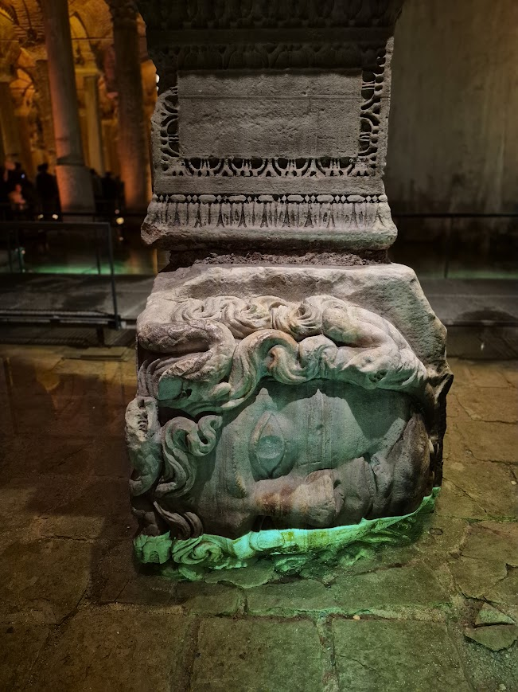
(이 사진은 예레바탄 사리아의 천정을 받치는 저 많은 기둥들 중 두 개에 특별히 있는 메두사의 머리 모양으로 조각된 주춧돌입니다. 하나는 이렇게 옆으로, 다른 하나는 아예 거꾸로 놓여 있습니다. 왜 이렇게 두 개만 따로 메두사 머리 모양으로 깎았고, 또 왜 옆으로 혹은 거꾸로 놓았는지에 대해서는 알려진 바가 없습니다. 동로마 제국이 쇠락하면서 그런 기록들이 없어진 것이 많고, 이 지하 저수조도 콘스탄티노플을 점령한 오스만 투르크 사람들이 이것저것 뒤져보다가 발견한 것으로서 오스만 학자들의 연구 대상이었다고 합니다.)
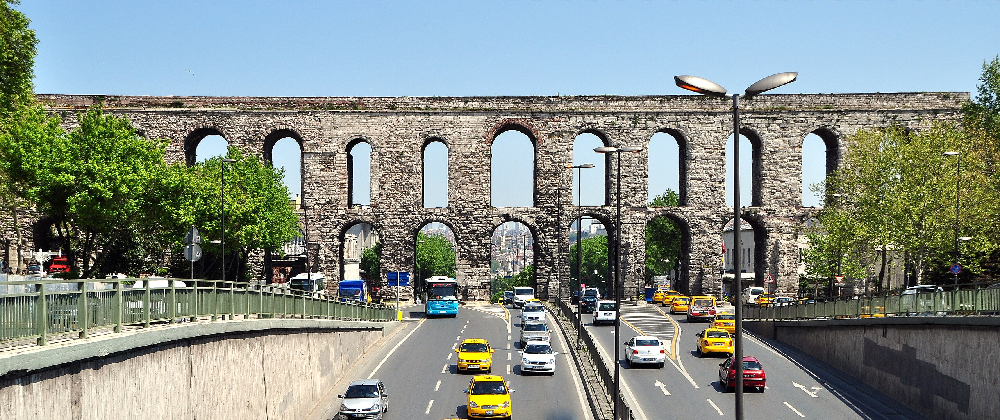
(물이 부족하니 당연히 로마인답게 멀리 수백 km 떨어진 곳에서 물을 날라오는 수도(aqueduct)도 있었습니다. 이 수도교는 콘스탄티노플로 물을 나르던 발렌스(Valens) 수도교입니다. 이스탄불 시내에 있는데, 저는 미처 여기엔 못 가봤습니다.)
하지만 달이 차면 기울듯이, 세상에 영원한 강대국이란 없는 법입니다. 동로마제국도 쇠락을 거듭했고, 소아시아에서 불처럼 일어난 오스만 투르크 제국도 그 넘치는 힘을 콘스탄티노플 점령에 쏟았습니다. 결국 1453년 콘스탄티노플은 오스만 투르크에게 함락되어 이스탄불로 이름을 바꾸게 되었습니다. 중앙 아시아에서 고달픈 유목민족 생활을 하며 서쪽으로 서쪽으로 이동하던 오스만 투르크는 콘스탄티노플을 점령하는 순간 자자손손 팔자를 고치는 건물주가 된 것입니다.
자자손손 건물주라고 했는데, 지금도 튀르키예는 유럽의 강국들로부터 통행세를 걷고 있을까요? 그 이야기는 그라쿠스 형제 이야기 하다가 분량 조절 실패한 관계로 다음 주로 넘어갑니다.
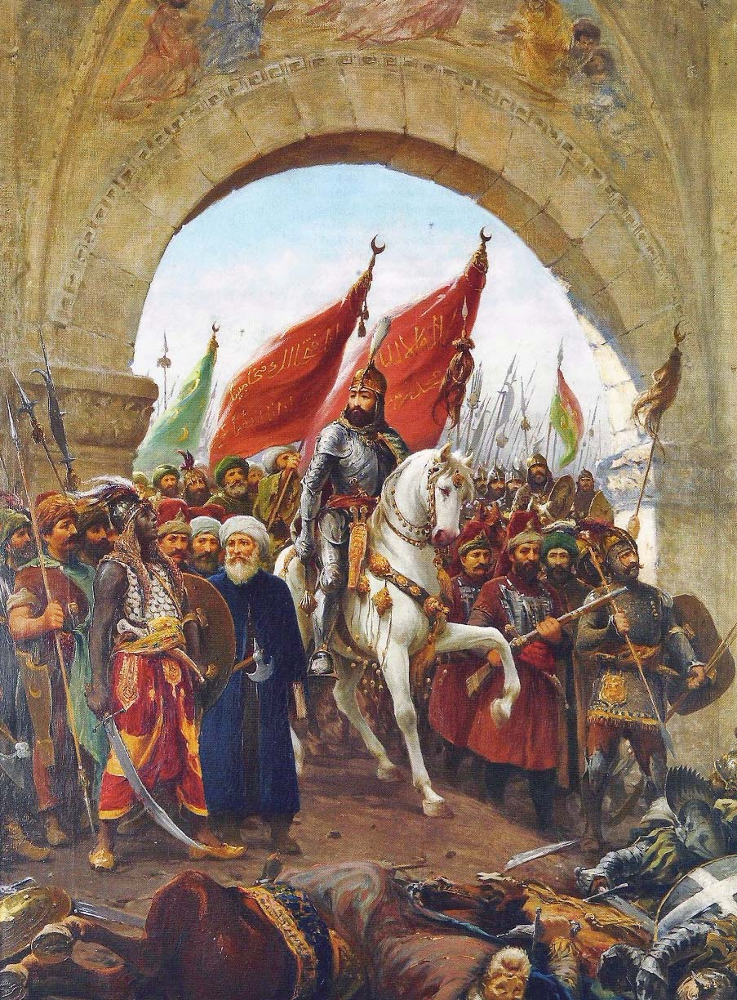
(콘스탄티노플에 입성하는 오스만 투르크의 정복자 메흐메트 2세입니다. 건물주 탄생의 순간입니다!)